Introduction
Surprite is a handheld controller for MR environment. It is designed to make people interact with the virtual environment with natural behavior and avoid frequent mistakes from gestures that compromises human into sophisticated operations.
Surprite is a handheld controller for MR environment. It is designed to make people interact with the virtual environment with natural behavior and avoid frequent mistakes from gestures that compromises human into sophisticated operations.
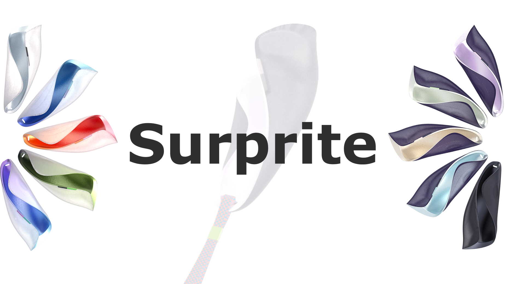
Problem Space
People have difficulty adapting themselves to ergonomics of mixed reality controllers. When operating with current devices, people modify hands along device contour that compromises their intuitive postures.
Research & insights
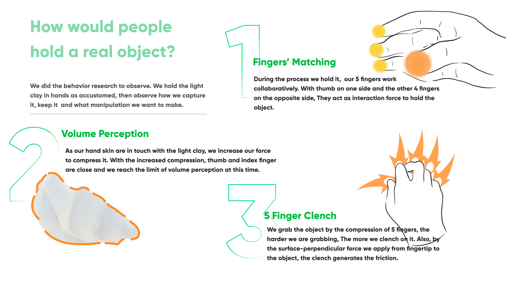
According to our soma design and practice observation, the way people hold, and control the device has some special properties. To better illustrate the principle, We list some as follows:
According to our soma design and practice observation, the way people hold, and control the device has some special properties. To better illustrate the principle, We list some as follows:
Match of fingers: 5 fingers work in a coupled way that pairs thumb with other fingers for forces or contours.
Volume perception: We squeeze the space within palms and fingers to sense the volume.
Clench fingers: we perceive the object and confirm the grasp through clenching out fingers in the real world.
Match of fingers: 5 fingers work in a coupled way that pairs thumb with other fingers for forces or contours.
Volume perception: We squeeze the space within palms and fingers to sense the volume.
Clench fingers: we perceive the object and confirm the grasp through clenching out fingers in the real world.
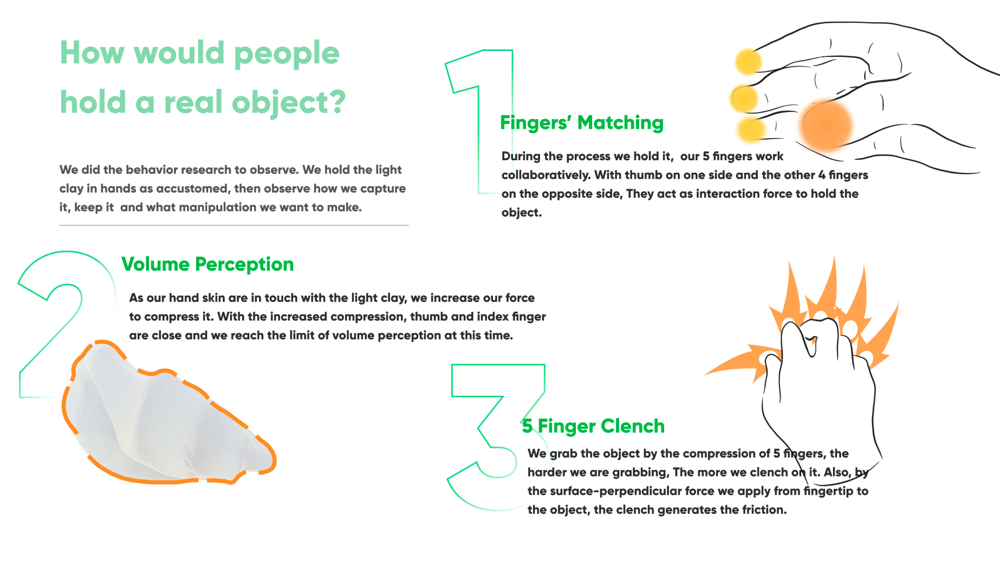
Human Centered Technology
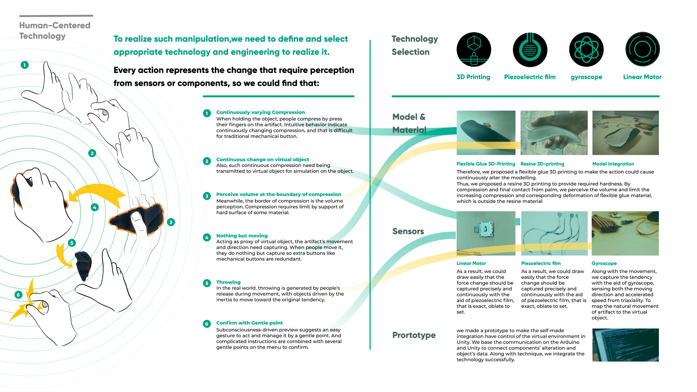
These posture principles raises several design needs for technology prototype:
To better simulate clench for perceiving and grasping the volume, we need sensors to continuously capture force’s change.
To adapt the fixed form factor onto different virtual objects, we simulate the minor change on shape and volume through compound layers, specifically pairing rigid with elastic materials.
Throwing in the real world is realized through releasing hands. We simulate the throwing by pressure sensors and accelerometers to capture the “throw” and “release”.
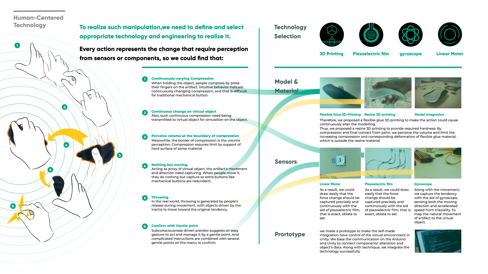
Integral Design
To integrate the human factors and ergonomics into form factor, we analyzed the bodystorm.
We applied the light clay to record natural holding posture. It provides context for movement. We applied a metaphor of birds for modeling.
Following the recorded postures, we visualized the hand track. it reveals how we distribute the pressure sensor across touching areas between the rigid and elastic materials.
As we evolve light clays with the bodystorm, it shows the topological structure that is hollow surrounded with conjoint contours.
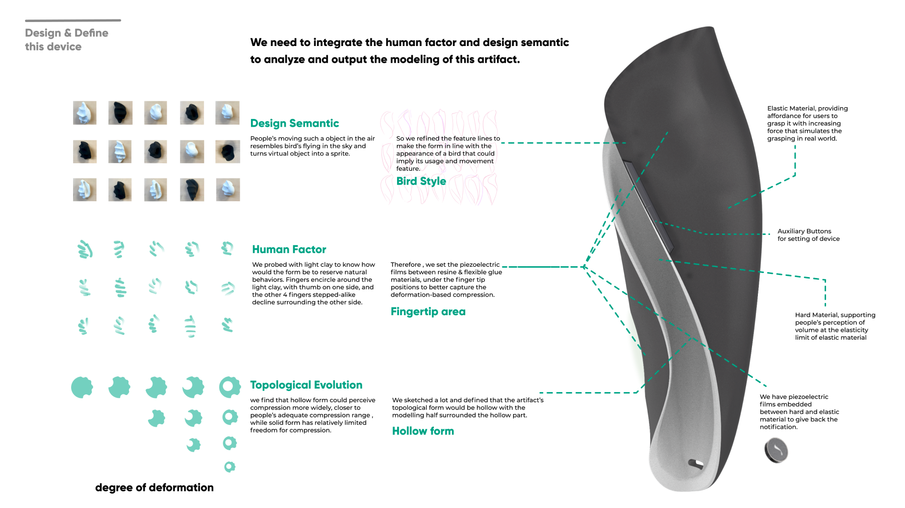
Interaction Showcase
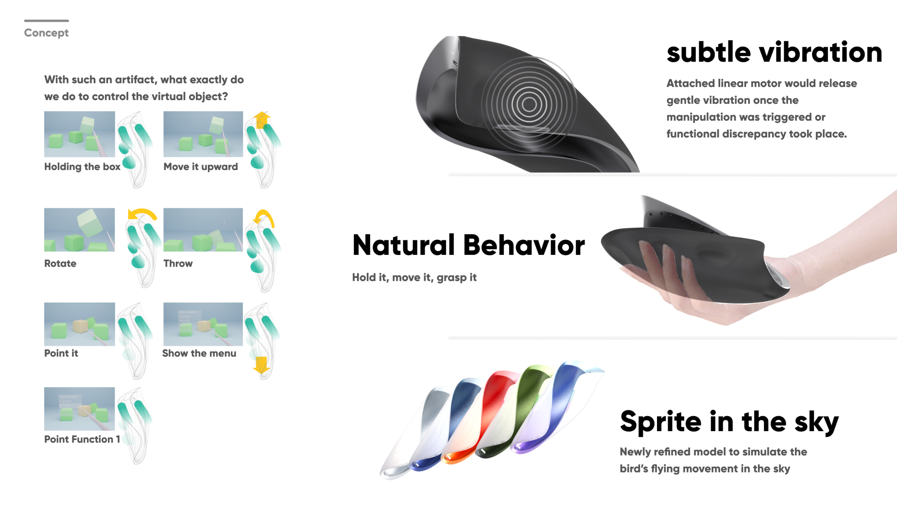
With the defined principle to capture the movement, grasp, and throw. We specified how we interact with the virtual objects in the virtual environment. It involves holding, movement, rotation, throw, and click etc.
To form the feedback and interaction, we applied subtle vibration, natural behavior, and sprite metaphor as 3 interaction principles here.
To form the feedback and interaction, we applied subtle vibration, natural behavior, and sprite metaphor as 3 interaction principles here.
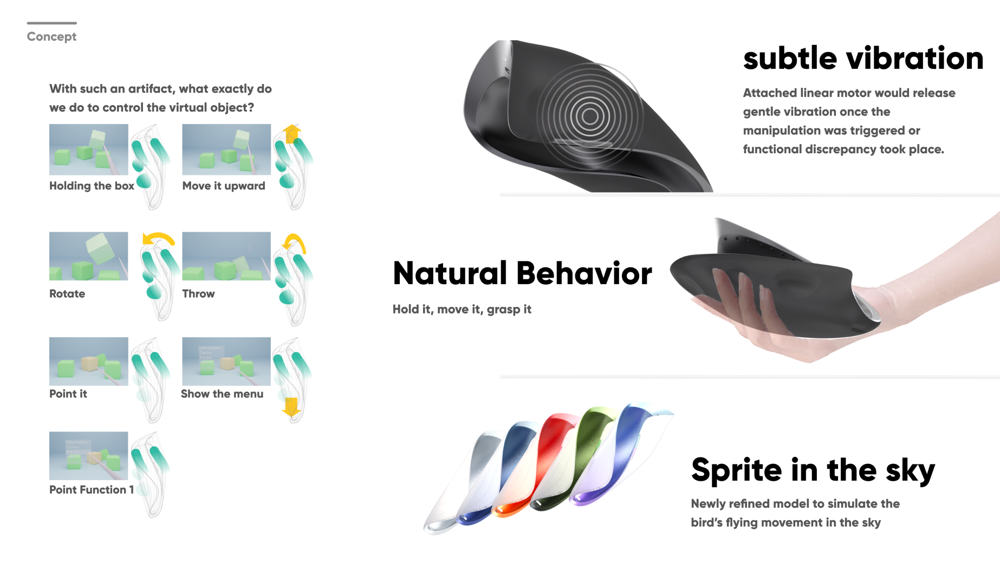
Design Showcase
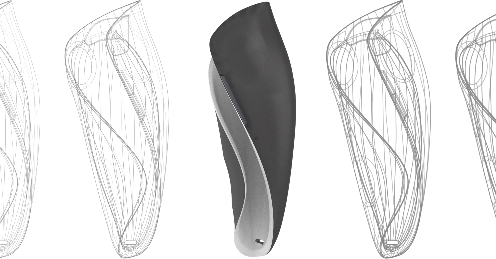
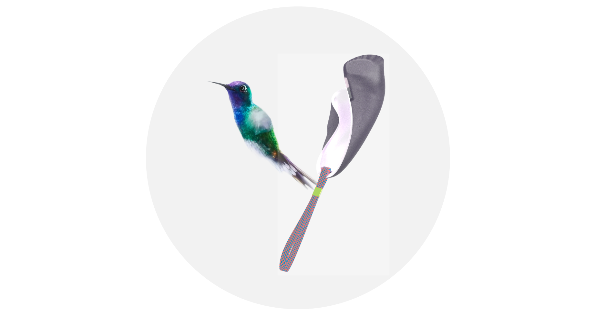
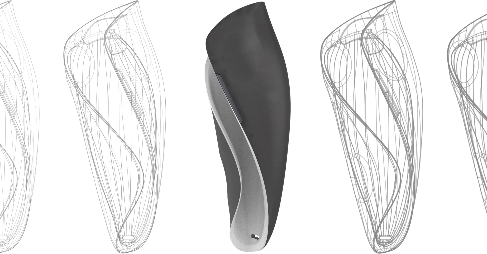
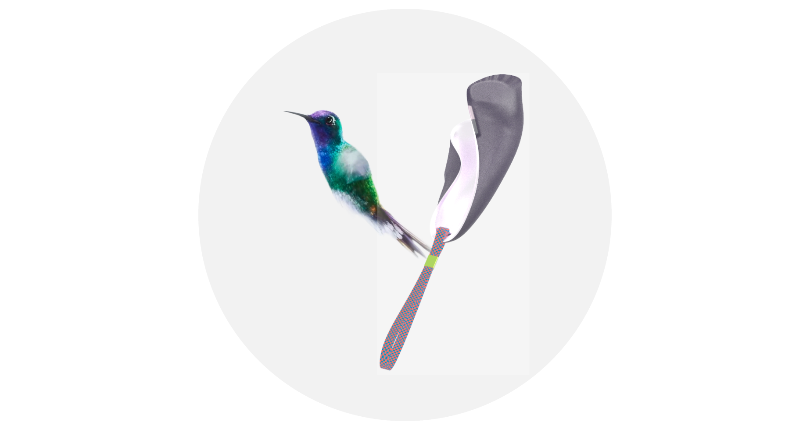